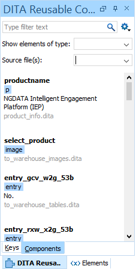
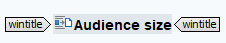

Go to the topic you want to use the conref in and if necessary, open the DITA Reusable Components view via Window > Show View > DITA Reusable Components.

Place the cursor where you want to insert the element.
In the DITA Reusable Components window, look for an element:
Choose between Keys, Components or Media:
Components: Elements from the library, such as steps, paragraphs, uicontrols, etc.
Media: Elements such as images, video and audio
Use Type filter text to search for an element ID or in the elements' text.
Use Filter by element type to search for a specific type of element.
Use Filter by source file to search for elements from a specific topic.
Add an element:
Hover over an element and click Insert.
Double-click an element.
Drag an element to the correct position.
The element is reused and automatically adjusted when you alter it in the conref library.
Note: A reusable component is always highlighted in a grey and is preceded by an icon. If you click that, you are taken to the element in the conref library.
